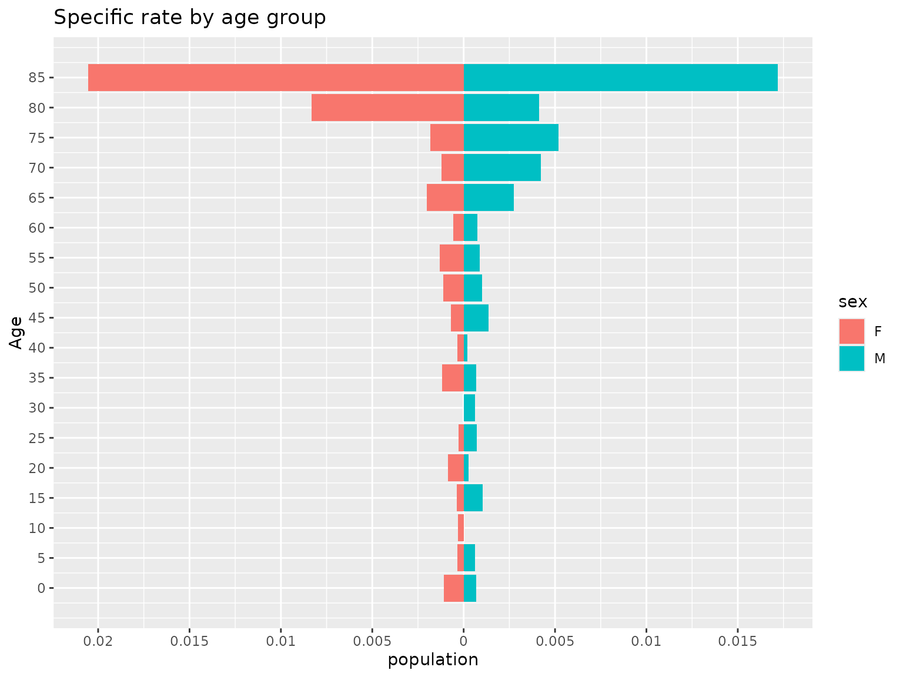

Returns the specific rates associated with being infected given age and sex
Source:R/demographics.R
age_risk.RdFunction that returns the specific rates of being infected given age and sex
Arguments
- age
A vector with the ages of cases in years from 0 to 100 years
- population_pyramid
A dataframe with the count of individuals with the columns age, population and sex
- sex
A vector with the sex of cases 'F' and 'M'. The default value is NULL
- plot
A boolean for displaying a plot. The default value is FALSE
Examples
pop_pyramid <- population_pyramid("15001", 2015,
sex = TRUE, total = TRUE,
plot = FALSE
)
ages <- round(runif(150, 0, 100))
sex <- c(rep("M", 70), rep("F", 80))
age_risk(
age = ages, sex = sex, population_pyramid = pop_pyramid,
plot = TRUE
)

#> $data
#> age population sex
#> 1 0 0.0010804970 F
#> 2 5 0.0003395586 F
#> 3 10 0.0003064195 F
#> 4 15 0.0003836317 F
#> 5 20 0.0008647313 F
#> 6 25 0.0002646203 F
#> 7 30 0.0000000000 F
#> 8 35 0.0011951001 F
#> 9 40 0.0003286771 F
#> 10 45 0.0007008936 F
#> 11 50 0.0011312217 F
#> 12 55 0.0013166557 F
#> 13 60 0.0005640158 F
#> 14 65 0.0020128824 F
#> 15 70 0.0011976048 F
#> 16 75 0.0018198362 F
#> 17 80 0.0083333333 F
#> 18 85 0.0205479452 F
#> 19 0 0.0006817794 M
#> 20 5 0.0006358290 M
#> 21 10 0.0000000000 M
#> 22 15 0.0010361352 M
#> 23 20 0.0002606542 M
#> 24 25 0.0007267442 M
#> 25 30 0.0006292276 M
#> 26 35 0.0006902502 M
#> 27 40 0.0002013693 M
#> 28 45 0.0013608528 M
#> 29 50 0.0010095911 M
#> 30 55 0.0008815751 M
#> 31 60 0.0007513148 M
#> 32 65 0.0027487631 M
#> 33 70 0.0042265427 M
#> 34 75 0.0052015605 M
#> 35 80 0.0041407867 M
#> 36 85 0.0171990172 M
#>
#> $plot
#>